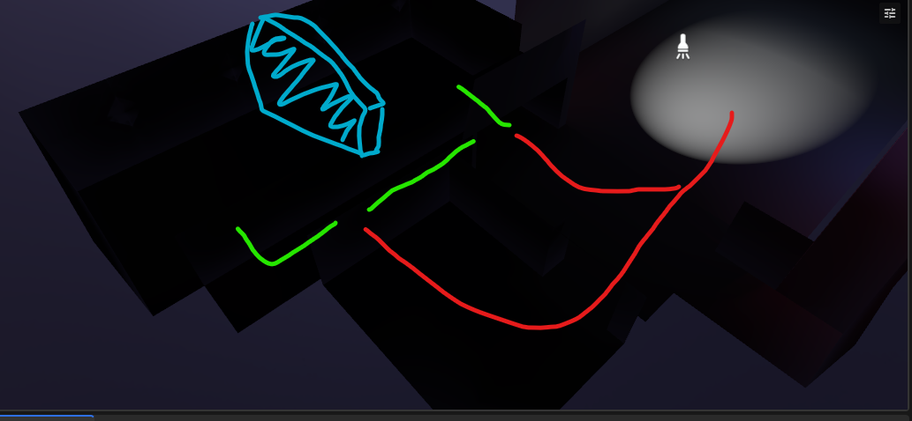
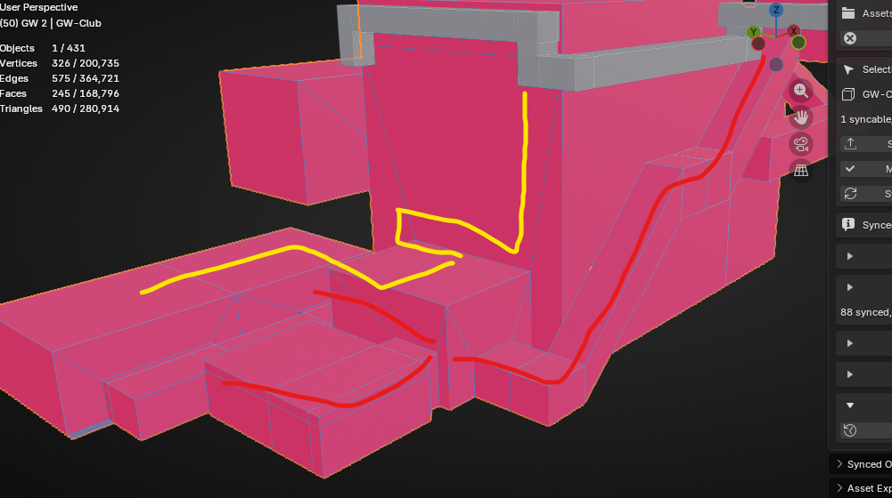
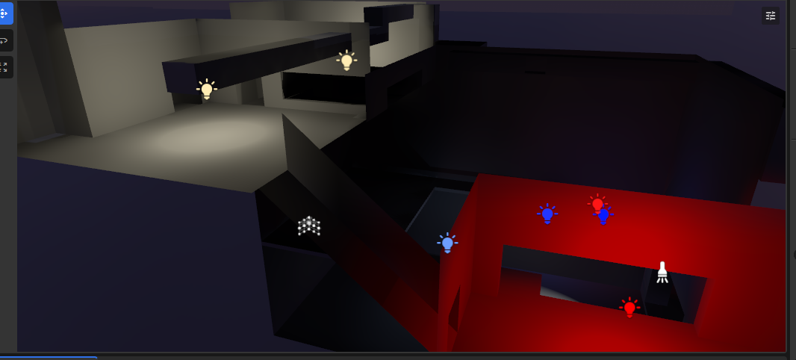
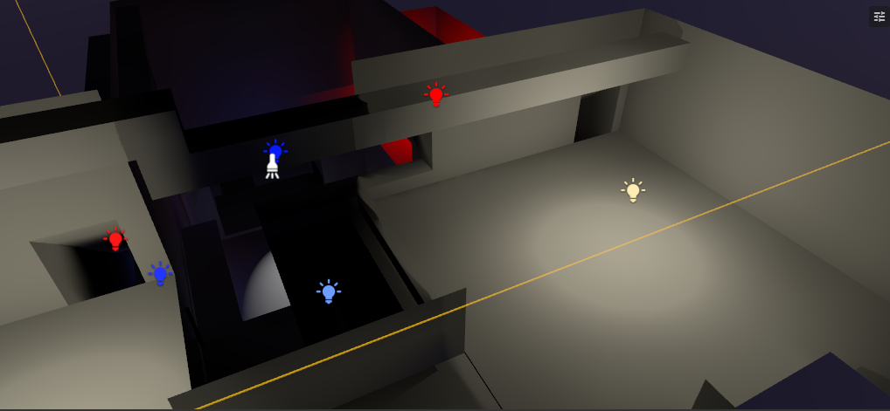
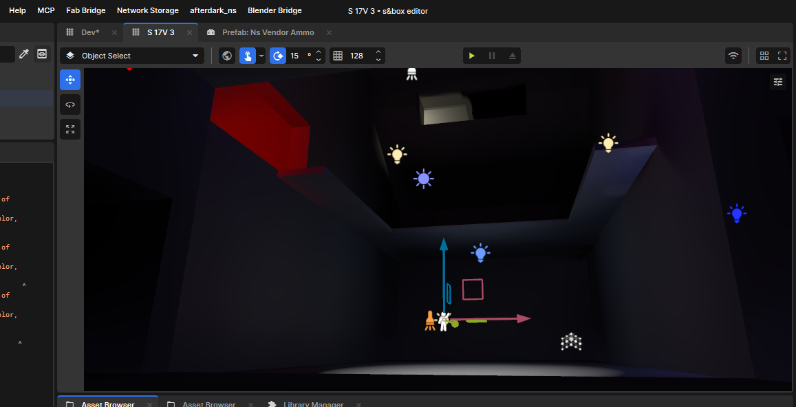

Club POI blockout and testing
This is an early blockout update for the new club POI work in AfterDark.
The goal of this pass is not final art. The goal is to make the space testable: entrances, back routes, lighting pockets, stage or interior reads, vertical access, and the rough difference between public movement and covert movement.
The plan for the main entrance is a laundromat speakeasy. On the street side, the POI should read like a normal laundromat frontage. Behind that, the club becomes the hidden interior destination. That gives the location a stronger AfterDark identity than a plain nightclub door, and it creates a useful gameplay split between the public cover business, the actual club space, and the back-route infiltration layer.
Longer term, the club should also connect into a broader hidden movement network. The laundromat is the public cover, but the POI can link to other secret entrances, service routes, and the main sewer/train pathing so it becomes part of the city's underground movement logic instead of a standalone interior.
That is why the current club is still shown as heavy blockout geometry. The important part right now is whether the footprint can support gameplay. A club POI has to work as more than a room with lights in it. It needs public frontage, hidden service access, enough interior shape to create pressure, and enough back-of-house structure to support jobs that should not move like normal customers.
The newest focus is the vent and pipe layer for Spy and Hitman loop testing. Those routes are being explored as a way to let certain roles move through the POI differently: around the front path, behind the crowd space, above or beside the main room, and into positions that create setup, scouting, infiltration, or escape options.





Public path, service path, covert path
The club needs at least three different movement reads.
The first is the public path. That is the obvious route: the laundromat frontage, readable approach, and the main path players would naturally take if they are entering the club normally through the speakeasy cover.
The second is the service path. That is the route that supports staff, maintenance, deliveries, back-room access, and future scripted or job-driven behavior. It should connect the POI to the rest of the district without feeling like a random shortcut, and it can eventually tie into the larger sewer/train route network where that makes sense.
The third is the covert path. This is where the vents and pipes start to matter. Spy and Hitman-style loops need routes that let players observe, reposition, enter from an unexpected angle, or leave without using the main room. Those paths need to feel authored rather than accidental, but they also cannot become too clean or too powerful. The stronger version of this is a small web of hidden entrances: laundromat cover, side/service access, vent or pipe routes, and deeper connections into sewer and train movement.
That balance is the test.
Why vents and pipes matter
Vents and pipes are useful because they give the POI a different movement language.
A normal doorway says "everyone can use this." A vent or pipe route says "this is job-specific, risky, hidden, slower, narrower, or conditional." That gives the design more knobs to tune:
- who can use the route,
- how visible the entry point is,
- whether the route is noisy or risky,
- where it exits,
- how much scouting it enables,
- and whether it creates a fair escape route or an unfair bypass.
For Spy and Hitman testing, that is exactly the kind of structure the club needs. The POI can become a test case for infiltration without requiring the whole city to be finished first.
Current state
This is still very much a blockout.
The useful parts are the massing, route intent, and testing shape. The club already has enough structure to start asking better questions about approach, lighting, route separation, vertical access, and how the laundromat cover should hide or reveal the real club entrance.
The unfinished parts are also clear:
- the building shape is still rough,
- the laundromat speakeasy entrance needs a clearer front-of-house read,
- the interior needs stronger room identity,
- the wider secret-entrance network needs to be mapped against sewer and train pathing,
- the vents and pipes need actual usable route rules,
- lighting needs to support gameplay reads instead of only atmosphere,
- and the public/service/covert paths need more testing in motion.
That is the correct stage for this update. The club POI is not being presented as finished. It is becoming a useful test surface for the loops that need this kind of place to exist.
Next pass
The next pass should keep the blockout practical:
- lock the public entrance and main-room read,
- block out the laundromat frontage so the speakeasy concept is readable from the street,
- sketch the hidden entrance network against the main sewer/train routes,
- test at least one vent route end to end,
- test at least one pipe or upper-service route end to end,
- decide where Spy and Hitman routes should be role-gated or tool-gated,
- keep lighting readable enough for gameplay testing,
- and keep the POI connected to the surrounding district instead of treating it like an isolated room.
This is the point where the club starts becoming useful. It is still rough, but it now has enough route logic to test more than just the shape of the building.
Signed, Nightshift